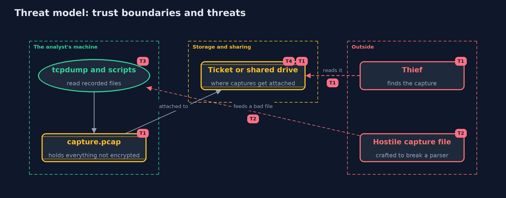

Threat Model — TCP/IP Basics with tcpdump and Python
A threat model answers four questions: what are we protecting, who or what could harm it, how, and what do we do about it. This one covers this project's own demo system, not a production deployment. Domain: an online store.
Scope
The handling of packet capture files by an analyst at an online store: recording, reading with tcpdump and scripts, storing and sharing. It does not cover live capture, the network that is being captured, or the content of any protocol above TCP.
What we protect (assets)
- The capture file, which holds every byte that crossed the wire unencrypted.
- The analyst's machine, which parses the file.
- The places where captures are stored or attached.
Who and what acts on the system
- An analyst who records and reads captures.
- A thief or colleague who finds a capture.
- An attacker who can influence a capture file's contents.
Trust boundaries
A trust boundary is a line that data or a request crosses between parts that trust each other differently. Threats cluster where those lines are.
- Capture file to the people who can read it: a file moves from a restricted machine to tickets and shared drives.
- Capture file to the parser: a file from outside is untrusted input.

Each dashed box is a trust boundary. A rose tag such as T1 shows where the threat of that number, in the table below, applies.
Threats, using STRIDE
STRIDE is a checklist of six kinds of threat: Spoofing (S), Tampering (T), Repudiation (R), Information disclosure (I), Denial of service (D), Elevation of privilege (E).
| Id | Kind | Threat | Where it shows up | Control in this project | What is left |
|---|---|---|---|---|---|
| T1 | Information disclosure | A capture file with card numbers or cookies is found, attached to a ticket or left on a shared drive | Traffic, Capture.containsText |
Capture briefly and with filters, store securely, delete when done, and use TLS so the content is encrypted | Metadata such as addresses, sizes and timing remains visible even with TLS |
| T2 | Elevation of privilege | A crafted capture file exploits a flaw in the tool that reads it | PcapFile.read |
The reader checks every length and rejects truncated or unexpected files | Keep tcpdump and Wireshark up to date, and open files from outside in a disposable environment |
| T3 | Tampering | A damaged or forged packet is trusted because only the application logs were read | Capture.damagedCount |
Recompute checksums when reading a capture | A forged packet with a correct checksum is still accepted, so a checksum is not authentication |
| T4 | Repudiation | Nobody can show who recorded a capture, or whether it was changed afterwards | the capture file | None in pcap: record who captured it and when, and store a hash or signature with it | Without signatures a capture is weak evidence |
Assumptions
- Captures are made with permission and a clear purpose.
- The analyst works on a copy, on a machine that is kept up to date.
- In the demo, all addresses are documentation addresses and the card number is a test value.
Out of scope
- Live capture and the privileges it needs.
- Decrypting TLS captures.
- Intrusion detection.
How the tests check this
CaptureTestchecks the pcap layout, round trips, truncated files, line format, the flood sources, the damaged packet, and the card number in the capture.ToolsInteropTest(integration) checks that the real tcpdump prints the same lines, that tcpdump -v marks the bad checksum, and that the Python script finds the same sources.DemoRunsTestcompares the whole demo with the golden output.
Where this model goes next
The next project, dns-basics, looks at how names become addresses, and how that answer too can be forged.